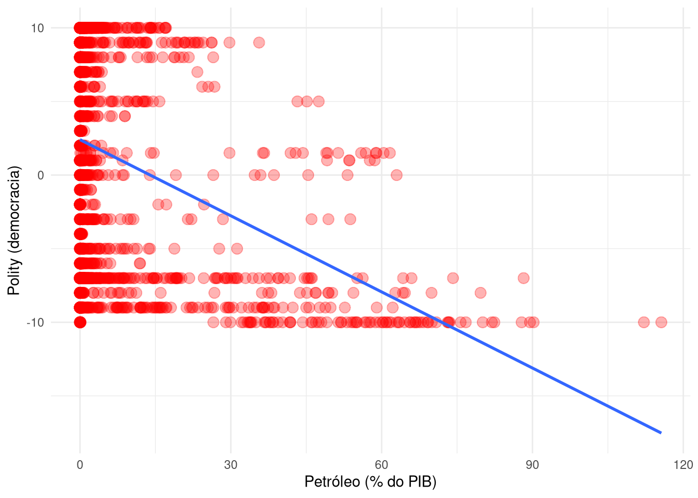
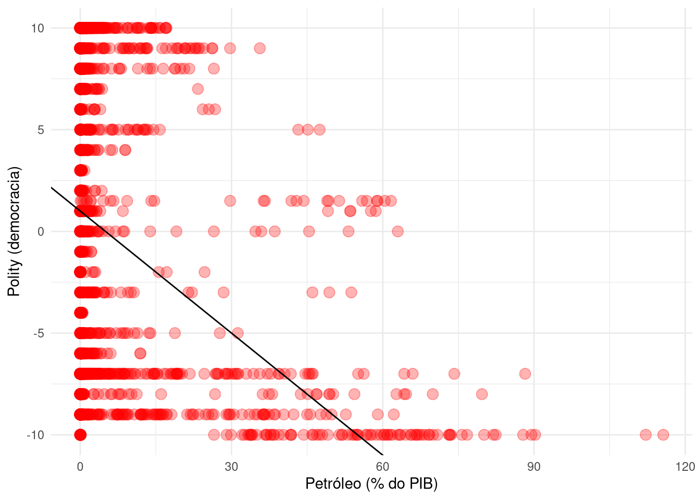
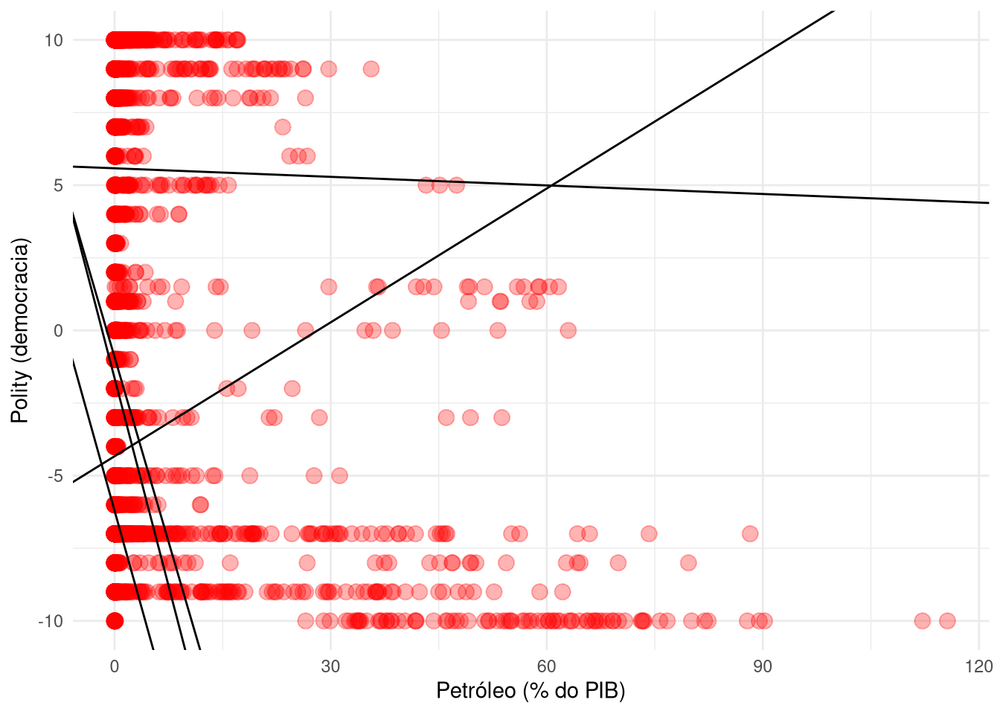
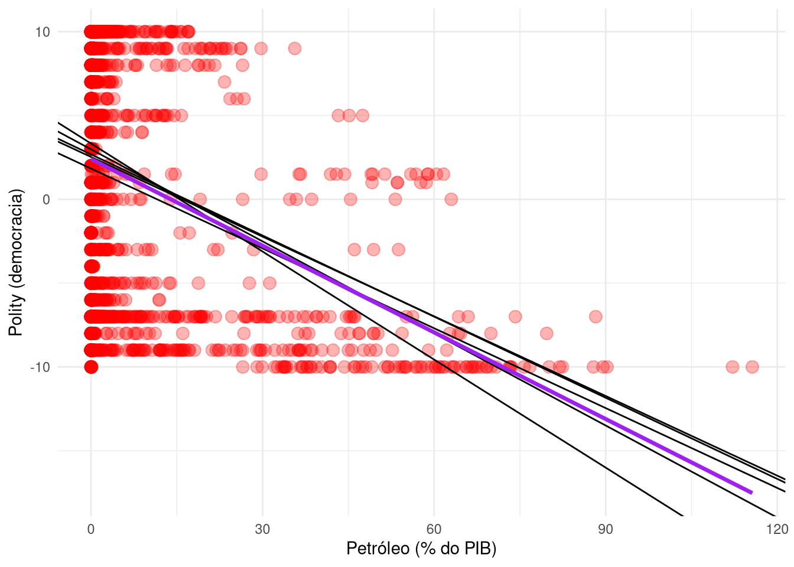

install.packages("haven")Regressão linear simples
Introdução
Modelos de regressão linear são extremamente úteis para entender a relação entre variáveis. Com ele, podemos examinar a relação linear entre duas variáveis – o que, como vimos, serve como um excelente estimador de valor esperados condicionais, desde que sejam satisfeitas os pressupostos do modelo como o da linearidade.
Para praticar esse conteúdo, estas notas explicam como baixar e carregar o banco de dados usado por Ross (2001) e, a partir dele, rodar alguns modelos de regressão. Além disso, as notas também oferecem códigos para implementar modelos lineares – não por mínimos quadrados – e visualizá-los usando gggplot2.
Baixando e carregando o banco de dados
Os dados de Ross (2001) estão no arquivo doesoil_clean.dta, em formato de Stata. Para carregá-los no R, é preciso instalar o pacote haven, que permite ler arquivos de dados de outros programas estatísticos, como Stata e SPSS. Para instalar o pacote, basta rodar:
Isso feito, para carregar o banco de dados, basta rodar:
library(haven)
ross <- read_dta("doesoil_clean.dta")O banco deve ter a seguinte cara:
head(ross)# A tibble: 6 × 59
cty_name id id1 year year1 wdr6 wdr123 wdr135 wdr269 wdr271 wdr272
<chr> <chr> <dbl> <chr> <dbl> <dbl> <dbl> <dbl> <dbl> <dbl> <dbl>
1 Afghanistan AFG 3 1966 1966 51.7 NA NA 82316304 NA NA
2 Afghanistan AFG 3 1967 1967 46.4 4.41 NA 85420096 NA NA
3 Afghanistan AFG 3 1968 1968 38.1 12.6 NA 71818400 NA NA
4 Afghanistan AFG 3 1969 1969 38.1 14.9 NA 82736600 NA NA
5 Afghanistan AFG 3 1970 1970 35.8 16.9 NA 84589504 NA NA
6 Afghanistan AFG 3 1971 1971 45.7 14.6 NA 99899200 NA NA
# ℹ 48 more variables: wdr273 <dbl>, wdr313 <dbl>, wdr344 <dbl>, wdr400 <dbl>,
# wdr477 <dbl>, ssafrica <dbl>, mideast <dbl>, me_nafr <dbl>, oecd <dbl>,
# v6 <dbl>, agr <dbl>, v123 <dbl>, oil <dbl>, v313 <dbl>, metal <dbl>,
# regime <dbl>, regime1 <dbl>, wdr97 <dbl>, wdr151 <dbl>, wdr152 <dbl>,
# log135 <dbl>, milpers <dbl>, islam <dbl>, ELF <dbl>, Food <dbl>,
# AgrFood <dbl>, WDR85 <dbl>, WDR87 <dbl>, WDR88 <dbl>, illit <dbl>,
# life <dbl>, WDR409 <dbl>, WDR411 <dbl>, tv <dbl>, WDR86 <dbl>, …Regressão linear
Rodar modelos de regressão linear é algo simples em R. Para regredir regime em oil, as variáveis de Ross (2001) que indicam democracia e petróleo, respectivamente, basta rodar:
lm(regime ~ oil, data = ross)
Call:
lm(formula = regime ~ oil, data = ross)
Coefficients:
(Intercept) oil
2.4037 -0.1724 Para facilitar a nossa inspeção dos resultados, vamos salvar o modelo em um objeto:
ross_lm <- lm(regime ~ oil, data = ross)Podemos usar outro pacote, o brooom, para ver os resultados de forma mais direta:
# Caso não tenha o pacote, rode: install.packages("broom")
library(broom)
tidy(ross_lm)# A tibble: 2 × 5
term estimate std.error statistic p.value
<chr> <dbl> <dbl> <dbl> <dbl>
1 (Intercept) 2.40 0.151 15.9 1.26e-54
2 oil -0.172 0.0103 -16.7 6.59e-60Visualizando modelos lineares simples
O ggplot2 já nos fornece geometrias que simplificam o processo de criar um gráfico de dispersão com uma linha de regressão. Para isso, basta usar geom_smooth() como uma camada adicional de um gráfico que usa geom_point():
library(tidyverse)
ggplot(ross, aes(x = oil, y = regime)) +
geom_point(size = 3.4, color = "red", alpha = 0.3) +
geom_smooth(method = "lm", se = FALSE) +
theme_minimal() +
labs(x = "Petróleo (% do PIB)", y = "Polity (democracia)")`geom_smooth()` using formula = 'y ~ x'Warning: Removed 1822 rows containing non-finite values (`stat_smooth()`).Warning: Removed 1822 rows containing missing values (`geom_point()`).
Visualizando modelos lineares arbitrários
E se eu tiver um modelo não estimado por mínimos quadrados, como visualizá-lo? Simples: basta trocar geom_smooth() por geom_abline() e passar os coeficientes do modelo como argumentos slope e intercept. Por exemplo, imagine que achamos que o melhor modelo deve ter \(\beta_0 = 1\) e \(\beta_1 = -0.2\):
ggplot(ross, aes(x = oil, y = regime)) +
geom_point(size = 3.4, color = "red", alpha = 0.3) +
geom_abline(slope = -0.2, intercept = 1) +
theme_minimal() +
labs(x = "Petróleo (% do PIB)", y = "Polity (democracia)")Warning: Removed 1822 rows containing missing values (`geom_point()`).
Testando diferentes modelos
O gráfico anterior abre a possibilidade interessante de testar diferentes modelos. Pela teoria, sabemos que um modelo por mínimos quadrados é um bom modelo, e sabemos o que ele busca minimizar (e.g., \(\sum_{i=1}^n (y_i - (\hat{\beta_0} + \hat{\beta_1} x_i))^2\)). Mas e se quisermos testar outros modelos? Como selecionamos bons modelos?
Aqui, vamos explorar uma solução comum em aprendizado de máquina: vamos gerar aleatoriamente e testar diferentes modelos e ver qual deles é o melhor. Isso, no entanto, envolve criar uma função – algo que não vimos explicitamente em Lego I (caso queira estudar mais sobre, veja este capítulo do R for Data Science).
Para começar, vamos criar uma função que faz o seguinte: gera modelos aleatoriamente sorteando valores possíveis de \(\beta_0\) e \(\beta_1\). Aí vai o código:
# Função para gerar modelos
gera_modelos <- function(n_modelos = 1000){
beta0 <- runif(n_modelos, min = -10, max = 10)
beta1 <- runif(n_modelos, min = -1, max = 1)
modelo <- tibble(beta0 = beta0, beta1 = beta1)
return(modelo)
}Um exemplo do que o modelo retorna:
gera_modelos(10)# A tibble: 10 × 2
beta0 beta1
<dbl> <dbl>
1 5.61 0.707
2 1.07 0.484
3 0.476 -0.553
4 3.61 0.941
5 -2.49 0.435
6 -3.13 0.649
7 -3.89 -0.191
8 -9.71 -0.178
9 -7.51 0.898
10 -1.84 0.0554Como dá para ver, em vez de estimar os parâmetros, a função os sorteia aleatoriamente. Podemos usar agora o ggplot2 para visualizar alguns desses modelos em cima dos dados de Ross (2001):
# Gera 5 modelos
modelos <- gera_modelos(5)
# Plotando modelos
ggplot(ross, aes(x = oil, y = regime)) +
geom_point(size = 3.4, color = "red", alpha = 0.3) +
geom_abline(data = modelos, aes(slope = beta1, intercept = beta0)) +
theme_minimal() +
labs(x = "Petróleo (% do PIB)", y = "Polity (democracia)")Warning: Removed 1822 rows containing missing values (`geom_point()`).
Nenhum destes 5 modelos parece bom. O que podemos fazer, no entanto, é gerar mais modelos e ver se algum deles é comparável a um estimado por mínimos quadrados. Para isso, vamos criar uma função que, para cada modelo, calcula a soma dos resíduos quadráticos (SRQ):
# Função para calcular SRQ
calcula_srq <- function(beta0, beta1, dados){
# Remove missings (não podemos calcular SRQ com missings)
dados <- dados %>%
select(regime, oil) %>%
na.omit()
# Calcula a soma dos resíduos quadráticos
srq <- sum((dados$regime - (beta0 + beta1 * dados$oil))^2)
return(srq)
}Com essa função, agora podemos gerar e testar 100 ou 1000 modelos um a uma. O código a seguir faz isso (usando rowwise() e mutate() para aplicar a função a cada linha do banco de dados):
# Gera 1000 modelos
modelos <- gera_modelos(1000)
# Calcula SRQ para cada modelo
modelos <- modelos %>%
rowwise() %>% # Aplica a função linha a linha
mutate(srq = calcula_srq(beta0, beta1, dados = ross)) %>%
ungroup() # Desfaz a operação rowwsise()
# Visualiza os 5 melhores modelos
modelos %>%
arrange(srq) %>%
head(5)# A tibble: 5 × 3
beta0 beta1 srq
<dbl> <dbl> <dbl>
1 2.53 -0.158 144693.
2 2.68 -0.161 144857.
3 1.83 -0.159 145248.
4 2.98 -0.183 145288.
5 3.33 -0.215 146716.Comparando com o modelo estimado por mínimos quadrados, abaixo, vemos que o resultado não foi nada mal.
# Seleciona os 5 melhores modelos
modelos <- modelos %>%
arrange(srq) %>%
slice(1:5)
# Plota os modelos estimados e o modelo de minimos quadrados
ggplot(ross, aes(x = oil, y = regime)) +
geom_point(size = 3.4, color = "red", alpha = 0.3) +
geom_abline(data = modelos, aes(slope = beta1, intercept = beta0)) +
geom_smooth(method = "lm", se = FALSE, color = "purple", linewidth = 1.2) +
theme_minimal() +
labs(x = "Petróleo (% do PIB)", y = "Polity (democracia)")`geom_smooth()` using formula = 'y ~ x'Warning: Removed 1822 rows containing non-finite values (`stat_smooth()`).Warning: Removed 1822 rows containing missing values (`geom_point()`).
A moral da história é que, assim como há diferentes estimadores possíveis para uma quantia de interesse, também há diferentes formas de estimar um modelo.
Indo além
Para simular diferentes modelos, usamos alguns recursos mais avançados do tidyverse que só cobriremos ocasionalmente no curso. Se você quiser se aprofundar, recomendo ver principalmente:
- R for Data Science, de Hadley Wickham e Garrett Grolemund, livro fundamental para quem quer aprender
Retidyverse
Referências
Ross, Michael L. 2001. «Does oil hinder democracy?» World politics 53 (3): 325–61.